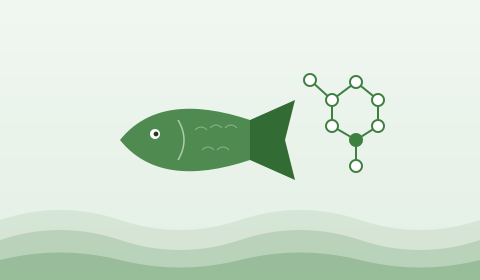

피쉬콜라겐
어류 비늘·껍질에서 추출한 고순도 콜라겐 펩타이드. 마린 콜라겐과 저분자 나노 콜라겐 라인을 자체 R&D 기반으로 운영합니다.
01 · WHAT
피쉬 콜라겐이란.
어류 유래 콜라겐은 분자량이 작아 흡수율이 높고, 알레르기 반응이 적은 것이 특징입니다.
고흡수 · 저자극의 단백질 소재
피쉬 콜라겐은 동물성 콜라겐 대비 분자량이 작아 체내 흡수가 빠릅니다. 이로 인해 화장품, 건강기능식품, 의약 외품 등 다양한 헬스케어 영역에서 핵심 원료로 사용됩니다.
디에스팜은 자체 정제 공정을 통해 불순물을 최소화한 고순도 펩타이드를 공급합니다.

02 · APPLICATIONS
피쉬 콜라겐 활용법
각 산업에 맞춘 입자 사이즈와 농도로 공급합니다.
- USE 01
화장품 원료
보습 · 탄력 강화 기능성 화장품의 핵심 성분.
- USE 02
건강기능식품
음용 분말 · 액상 · 젤리 형태의 콜라겐 보충제.
- USE 03
의료 외용
창상피복재 등 외용 의료 소재 응용.
03 · PROCESS
제조과정 및 판매
원료 입고부터 정제, 분획, 분말화, 출하까지 일관 공정.
- STEP 01
원료 전처리
어피·비늘 세척 및 잔여물 제거.
- STEP 02
효소 가수분해
특수 효소로 콜라겐 추출.
- STEP 03
정제 · 분획
분자량 별 분획 및 불순물 제거.
- STEP 04
농축 · 살균
저온 농축 후 살균 처리.
- STEP 05
분말화
분무 건조로 미세 분말화.
- STEP 06
품질 검사 · 출하
로트별 분석 후 BB 또는 소포장 출하.
04 · MARINE
마린 콜라겐
해양 어류 유래 표준 분자량(약 3,000Da 내외) 라인.
표준 흡수도 · 범용 라인업
건강기능식품과 화장품 전반에 가장 폭넓게 사용되는 표준 라인입니다. 무취·무미에 가까운 정제도로 음용·도포 모두 거부감이 적습니다.
벌크 백 단위부터 OEM 분포장까지 대응합니다.
05 · NANO
나노 콜라겐
저분자 (약 500Da 이하) 초미세 라인. 흡수율을 높인 프리미엄 제품.
저분자 = 빠른 흡수
분자량을 더 잘게 잘라 체내 흡수율을 끌어올린 프리미엄 라인입니다. 음용 콜라겐 액상 제품 등 빠른 효능 체감이 중요한 카테고리에 적합합니다.
콜라겐 원료 / OEM 문의
벌크 공급, 자체 처방, 분포장 모두 가능합니다.